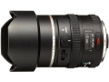

器材库 > 120中幅镜头 > D FA645 25/4 AL [IF] SDM AW

该产品没有存档的规格参数
该产品暂无存档的网友点评
产品图 / 样片
FA645 25/4 AL [IF] SDM AW
评测 / 相关文章
该产品暂无存档的评测文章
相关文章
- ［资讯］宾得D FA645 25/4 AL延迟至四月发售 （原站已下线）
- ［资讯］宾得645格式镜头产品线曝光 （原站已下线）
- ［资讯］宾得D FA645 25/4 AL [IF] SDM AW （原站已下线）
- ［资讯］宾得D FA645 25/4发布 （原站已下线）